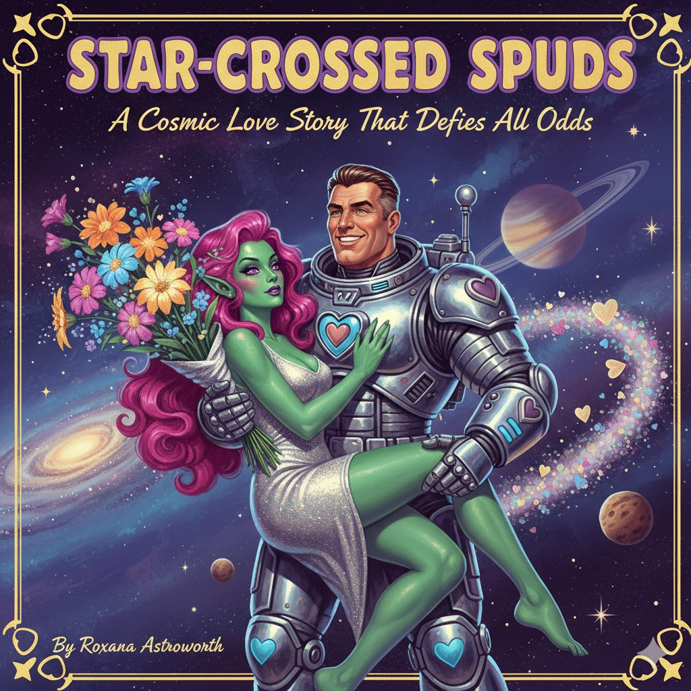

I have seen books torn to pieces for being too long, too short, too complicated, not complicated enough, too violent, not enough action.. Well the list goes on. Yet as a writer, when you come to write the blurb, and set the genre/category – the dreaded parts that nobody warns you about when you write a book – you have to make some important choices, and ensure you don’t accidentally screw up.
Making an avid military/sci-fi fan, the unintended audience for your romantic novel about a space marine and a green-skinned alien woman, will not end well. Yes, technically both could be classed as military/sci-fi, if you squint hard enough; And if you’re keen to get your book published you could easily see this category before sci-fi/romance (or romance/sci-fi) and think, hey that fits nicely!

So now you have accidentally written a romance novel with a sci-fi theme, how do you drum up interest in it? Well, dear-reader, despite my insignificant viewpoint that there are some genres, as a writer, you should never cross, I do know a lot of women who would lap up a book with a cover like the above. What I don’t know, however, are any men; and certainly no reader of the sci-fi genre who would touch it; So unwritten rule-one of writing is cross genres at your peril.
It should be easy to avoid mis-categorisation, right? Well yes, if the book is as blatantly obvious as the above then most definitely, but generally it is not this obvious. Putting a bit of love-action into your hard sci-fi novel has been done by many famous writers, (though I doubt any sci-fi fan will ever remember which novel or which part) but put in too much, and you have crossed a line in the sand. Same with a romantic novel, adding the odd laser gun, or flying saucer, will likely register little with the readers pretty little minds, but adding an explanation of the quantum-impulse-star-drive, and the technical parameters it needs to achieve faster-than-light travel, will at minimum fall of deaf-ears, and at worst get you a 1-star review.
It is easy to accidentally fall into this trap if you are writing a little outside your normal genre, and you may think that a little sprinkling here or there will be received favourably, or even broaden the readers mind. In some alternate universes it might, but in this one, unless you have accidentally written a masterpiece, it probably wont!
I of course am a total hypocrite, when it comes to taking my own advice, and I have made this mistake a few times (though not as blatantly obvious as above). Case in point, and the reason for the actual blog post, the latest novel I am writing; I just re-read it, and threw away more than half the story, and eliminated two characters. Yes my sci-fi/fantasy drifted too far into soppy. The good news is I caught it early, the bad news is I will most certainly do it again!